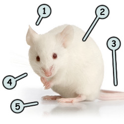
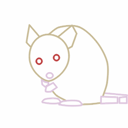
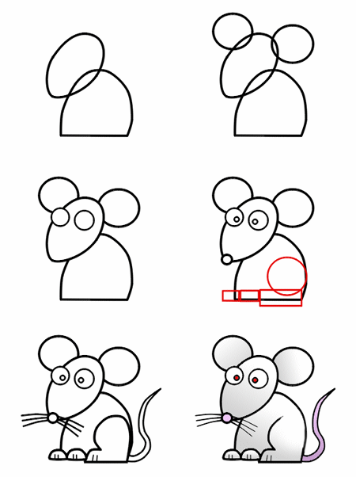
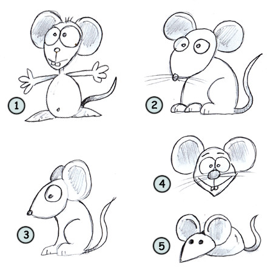

How to draw a cartoon mouse
Drawing a cartoon mouse: some fun facts before starting sketching!
- A mouse can weigh around one or two ounces.
- Including the tail, they can have a size ranging from 3 to 8 inches.
- There are several hundred species of mouse around the world.
 This easy to follow tutorial will help you learn how to draw a simple mouse.
This cute but not always appreciated animal is well-known for his big hairless ears (1), his long and thin tail (3) and his short and shiny white fur (2).
The mouse also has small legs (5) and several long whiskers (4). This is a unique animal, making it easy for anyone to draw a good representation of it!
 The mouse is mostly made of circles. The head is round but that part near the muzzle is a little narrower. The ears are also made of circles but when seen from a different view, they look more like triangles.
The tail is made of several small rectangles to help it move better. The body is represented by a big oval shape. Notice how the front legs are small compared to the back ones.
Start this drawing lesson by sketching a circle for the head and half of an oval for the body. Next, add two circles to create the ears. Work a little bit on the outline and then draw the eyes.
Continue with the addition of the pupils and some rectangles to form the legs. Finish your drawing by working on the outline of the legs and by sketching the tail and the whiskers.

If you found this tutorial a little too difficult, you might want to try sketching a simple mouse like this one (5). If you are ready to take a step further, why not draw a mouse with more personality (1)(3)!
Just remember to sketch a nice circle with a narrow end for the nose and then add those big round ears and you won't miss your drawing, I promise!

Are you looking for cartoon images? Do you like the images available on this website?
Click here to learn how you could make them yours!
Go back from How to draw a cartoon mouse to home page
| Share this page: |  |  |  |  |
 |  |  |  |